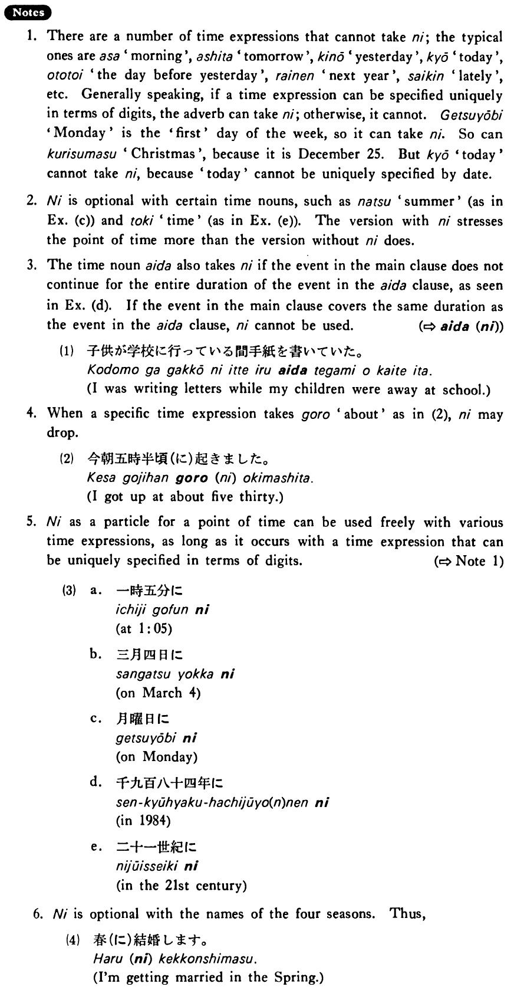

に (1) (B. 289)
- (ks).
- 私は毎朝六時半に起きる・起きます。
- I get up at six thirty every morning.
- (a).
- 私は四月一日に生まれました。
- I was born on April 1st.
- (b).
- 今朝は五時半にうちを出ました。
- This morning I left home at five thirty.
- (c).
- 来年の夏（に）外国旅行をするつもりです。
- I intend to make a trip abroad next summer.
- (d).
- 子供が学校に行っている間に手紙を書いた。
- I wrote a letter while my children were away at school.
- (e).
- 田中は大学にいる時（に）今の奥さんと出会った。
- Tanaka met his present wife when he was in college.
